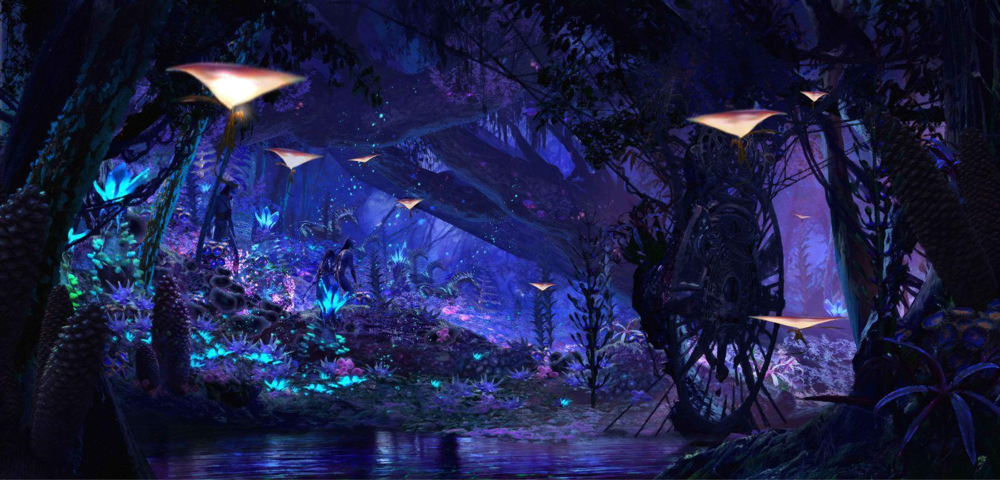

O coração bioluminescente de Pandora.
As florestas de Pandora são cheias de plantas brilhantes, árvores gigantes e criaturas exóticas. Durante a noite, tudo ganha luz própria, criando um ambiente mágico e conectado à natureza.
É nesse ambiente que os Na’vi vivem em harmonia com Eywa, respeitando cada ser vivo do planeta.
